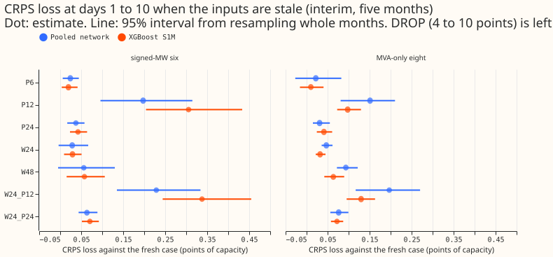
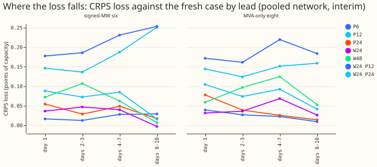
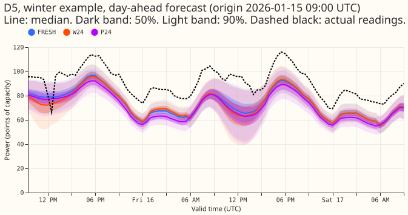
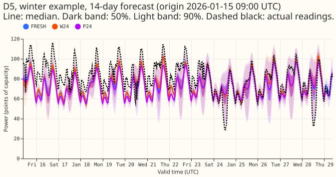
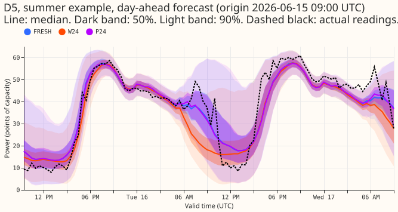
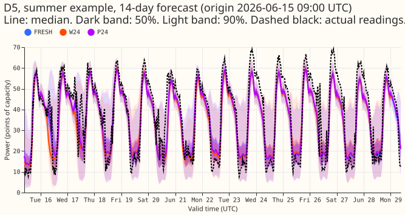

How much does the pooled mixture density network lose when the weather forecast is a day old or the power readings are delayed?
Take-home message: a one-run-old weather forecast and readings delayed by 6 or 24 hours change the forecast little, but readings delayed by 12 hours and missing readings change the forecast a lot. The pooled plain mixture density network (a neural network trained once on all substations, from experiment 397) loses 0.03 points of continuous ranked probability score (CRPS; days 1 to 10; points of effective capacity, where one point is 1% of a substation's capacity) at the six primary substations whose meters record signed power (the signed six), when the weather forecast is one run (24 hours) older. It loses 0.02 points when the power readings are delayed by 6 hours and 0.04 when they are delayed by 24 hours. Each such change to the inputs is an "arm" below. The same network loses 0.20 points when the readings are delayed by 12 hours and 9.7 points when the three newest-reading lags are missing. The monthly XGBoost model (S1M, experiment 389: a gradient-boosted tree model given the ensemble mean and spread of temperature and shortwave radiation) loses 0.03, 0.02, 0.04, 0.31, and 4.5 points in the same five arms. The pre-registered rule calls for a second experiment, because the 12-hour delay makes the loss exceed its limit. Tail coverage holds: the share of outcomes below each model's 95% and 99% quantiles (q95 and q99 coverage) falls by under 0.02 in every arm except the missing-lag arm.

Question and answer
A day-old weather forecast changes the forecast little, and the time of day of the newest reading matters more than its age. We re-scored the stored neural networks of experiment 397, and the stored XGBoost boosters of experiment 389, with stale inputs and fitted nothing. The live service ingests one ECMWF run a day and receives power readings every 6 hours. A forecast can therefore pair recent readings with an old weather forecast, or the reverse.
The decision rule says no second experiment is needed only if every limit holds. The limits are 0.05 points of loss for P6 and P12 and 0.10 for the other four arms in the key below, together with a coverage fall under 0.02. The planning session for the mixture density network proposed them without evidence, and the manager and the maintainer may change them. P12 and W24+P12 fail the rule. The plan for the second experiment (training with random staleness and two age inputs) is a separate brief.
Key to the arms (the arm table under "Design, data, and caveats" gives the details):
- FRESH: the weather forecast of the forecast's own run and the newest power reading 3.5 hours before the forecast origin (the training pairing).
- W24 and W48: the weather forecast from the run one day or two days earlier.
- P6, P12, and P24: the power readings delayed by 6, 12, or 24 hours.
- W24+P12 and W24+P24: both at once.
- DROP: the three lags that depend on the forecast origin (newest reading, same time yesterday, same time last week) are missing.
- S1M: the XGBoost model with the ensemble mean and standard deviation of temperature and shortwave radiation as extra columns.
- Signed six: the six primary substations whose meters record signed power. MVA-only eight: the eight primary substations whose meters record apparent power only.
- Details: W24 and W48 are matched on valid time, and the lead and calendar inputs stay those of the fresh origin. P6, P12, and P24 recompute the lag values and the lag-age inputs from the delayed origin, and the lead is unchanged. DROP uses the neural network's missing-flag inputs and the XGBoost model's native missing value.





Results
CRPS loss against the fresh case at days 1 to 10 (points of effective capacity; positive is worse), five screen months, with the 95% month-block interval in brackets. W48 has no limit. The pooled network's P6 interval at the MVA-only eight reaches 0.083, above the limit of 0.05, although its estimate passes.
| Arm | Pooled network, signed six | Pooled network, MVA-only eight | XGBoost S1M, signed six | XGBoost S1M, MVA-only eight |
|---|---|---|---|---|
| Fresh CRPS | 3.270 | 3.873 | 3.525 | 3.995 |
| W24 | 0.029 (-0.004 to 0.067) | 0.047 (0.036 to 0.062) | 0.029 (0.009 to 0.051) | 0.032 (0.022 to 0.045) |
| W48 | 0.056 (-0.005 to 0.130) | 0.093 (0.072 to 0.122) | 0.058 (0.015 to 0.106) | 0.064 (0.042 to 0.089) |
| P6 | 0.024 (0.006 to 0.044) | 0.022 (-0.027 to 0.083) | 0.020 (0.004 to 0.041) | 0.010 (-0.016 to 0.040) |
| P12 | 0.197 (0.096 to 0.315) | 0.151 (0.081 to 0.210) | 0.306 (0.204 to 0.433) | 0.098 (0.073 to 0.129) |
| P24 | 0.037 (0.017 to 0.058) | 0.031 (0.015 to 0.055) | 0.042 (0.023 to 0.064) | 0.041 (0.024 to 0.061) |
| W24+P12 | 0.229 (0.135 to 0.334) | 0.197 (0.117 to 0.270) | 0.338 (0.244 to 0.455) | 0.130 (0.095 to 0.163) |
| W24+P24 | 0.064 (0.044 to 0.089) | 0.076 (0.057 to 0.099) | 0.071 (0.052 to 0.092) | 0.072 (0.058 to 0.087) |
| DROP | 9.73 (4.29 to 14.85) | 6.50 (2.86 to 9.87) | 4.53 (2.94 to 5.70) | 3.68 (3.35 to 4.00) |
The XGBoost model loses about as much as the neural network in most arms. The XGBoost model loses more at the signed six when the readings are 12 hours late (0.31 against 0.20 at P12) and less when the lags are missing (4.5 against 9.7). At the MVA-only eight it loses less than the neural network at P12 (0.10 against 0.15) and in DROP (3.7 against 6.5).
Tails and widening
- Coverage barely moves. At the signed six and the MVA-only eight, q95 coverage falls by at most 0.011 and q99 coverage by at most 0.004 in every arm except DROP, for both models. The limit is 0.02, so the arms other than DROP need no rule that widens the intervals.
- DROP breaks the neural network's tails. The neural network's q95 coverage falls from 0.891 to 0.560 at the signed six and from 0.942 to 0.674 at the MVA-only eight, and its q99 coverage from 0.959 to 0.845 and from 0.988 to 0.853. Its 90% interval is 1.79 and 1.32 times as wide as with fresh inputs, That widening does not make up for the missing lags. The XGBoost 90% interval is 1.10 and 1.02 times as wide, and its q95 coverage falls by 0.115 and 0.017.
- Interval width changes by under 3.1% in every other arm.
Design, data, and caveats
- What the stored runs allow. Only the 00:00 UTC run is stored, one per day, so no 6-hour or 12-hour stale-weather arm could be built. W24 and W48 are the stale-weather arms the stored runs allow.
- Models. The pooled plain neural network, summary scheme, three seeds averaged in quantile space, from experiment 397; the S1M boosters of experiment 389 (monthly refits, one booster per Primary and refit). The per-Primary neural network was not re-scored. The 1.15 widening of experiment 397 is applied to every arm. Both models read the five screen months of experiment 397 (2025-10, 2025-12, 2026-01, 2026-03, and 2026-06).
- Reproduction gates. FRESH on unfiltered power reproduces experiment 397's stored forecasts to 6e-7 and experiment 389's stored S1M forecasts exactly.
- Rows. Older runs do not reach the last day of the horizon, so W24 and W48 score fewer half-hours (1,538,592 and 1,430,473 half-hours against 1,645,943). Each stale arm and FRESH are compared on their shared rows.
- Cleaned data. The stored power arrays already hold the flagged
substation_zerohalf-hours as missing, so cleaning the lag inputs changes nothing. The scorer drops flagged half-hours from the actuals: 153, 11, 0, 3, and 0 in the five months. - Why P12 fails (tested by the audit on one primary substation, D5, in 2026-01). In training the forecast origin was always 09:00 UTC, so the newest reading was always the 05:30 overnight trough. P12 makes it the 17:30 reading of the previous day, the evening peak. The mean absolute change of the newest-reading lag against FRESH is 0.30 to 0.45 of capacity at P12, against 0.02 to 0.07 at P6 and 0.00 to 0.07 at P24. The loss at P12 rises with lead (0.15 at day 1 to 0.25 at days 8 to 10 at the signed six) and is largest at valid times 00 to 03 UTC. On D5 in 2026-01 (seed 0, pooled neural network), the audit replaced only P12's newest lag with the 05:30 reading of the previous day, and that removed 97% of the P12 loss. Putting P12's 17:30 value into FRESH reproduced 94% of it. The age inputs are not the cause, and a newest lag declared missing is worse than any of these variants. The finding is therefore a mismatch between the time of day of the newest reading in training and in use, not a response to 12 hours of delay. P6 (newest reading at 23:30) and P24 (05:30) are tolerated. The arm grid confounds delay with time of day, because the origin is always 09:00.
- Checks. A fresh Sonnet reviewer re-derived the results on its own. The W24, P12, and P24 losses agree to within 0.005 points at both groups. The reviewer's FRESH CRPS at the signed six is 3.252 against the scorer's 3.270, and its DROP loss is 9.45 against 9.73. The gap is unexplained, and this page reports the scorer's numbers. The audit rules for a result that contradicts its prediction and for a result a later design depends on both applied, and a fresh Sonnet audit re-derived the P12 lags from the raw power array and confirmed them (the audit checked one Primary, one month, and one seed).
- Prediction outcomes. P1 held for W24, P6, P24, and W24+P24 and failed for P12 and W24+P12. P2 failed: the loss does not grow with delay (P6 0.024, P12 0.197, P24 0.037 at the signed six), and the loss falls with lead in P24 but not in P12 or W24. P3 held, by a wide margin. P4 held for W24 and P6 to P12 (every coverage fall is under 0.012) and failed for P24, whose coverage fall is 0.002; the coverage collapse in DROP was not predicted. P5 failed: the XGBoost model lost more than the neural network at P12 and W24+P12 at the signed six (by 0.11), and by 0.005 to 0.012 at W48, P24, and W24+P24 at the signed six and P24 at the MVA-only eight. The XGBoost model lost less in DROP and, at the MVA-only eight, in the other arms.
- Caveats. Five test months give wide intervals, so every number is interim. One run per day confounds the arm grid with the time of day. Only two kinds of forecasting model were tested.
- What to try next. A second experiment, in a separate brief: train with the newest reading at random times of day (vary the training origin hour), a random weather-forecast age, and the origin lags sometimes missing, with the age of each input as an input. Compare delays that land on the same hour of day, such as 24 against 48 hours, to measure how loss grows with delay.